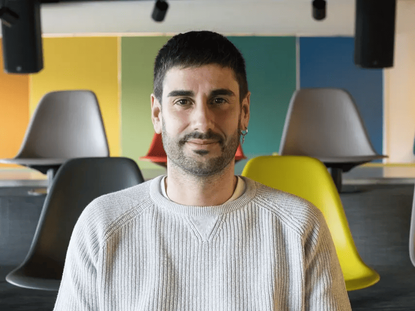
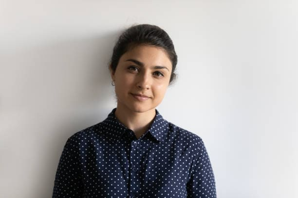

Contamos con un equipo de profesores altamente cualificados en cada área del conocimiento, comprometidos con la excelencia educativa y el desarrollo integral de nuestros estudiantes.
Coordinación de las áreas científicas y desarrollo de proyectos interdisciplinares
Estudio de la vida y la Tierra, laboratorios y salidas de campo
Experimentación y comprensión de los fenómenos naturales
Desarrollo del pensamiento lógico y resolución de problemas
Innovación, robótica y desarrollo de proyectos tecnológicos
Coordinación de historia, geografía y economía
Desarrollo de la competencia comunicativa y literaria
Pensamiento crítico y reflexión sobre el conocimiento
Comprensión del espacio y el tiempo histórico
Coordinación de inglés, francés y otros idiomas
Competencia comunicativa en lengua inglesa
Aprendizaje de la lengua y cultura francesa
Desarrollo físico, deporte y hábitos saludables
Estudio de las lenguas y cultura clásica
Expresión artística y educación plástica
Educación musical y actividades corales
Apoyo psicopedagógico y orientación académica
Te ayudamos a planificar tu futuro académico con información actualizada sobre todas las opciones disponibles después de completar tus estudios en nuestro centro.
Acceso: Selectividad/EBAU
Duración: 4 años (240 ECTS)
Requisitos: Título de Bachillerato
Acceso: Titulación ESO/Bachillerato
Duración: 1-2 años
Ventajas: Enfoque práctico y laboral
Requisitos: Idiomas y expediente académico
Plazos: Consultar convocatorias anuales
Idiomas: Nivel B2 mínimo requerido
Conoce las principales salidas profesionales asociadas a cada área de estudio y las perspectivas laborales actuales del mercado.
Psicóloga Educativa - Máster en Orientación
Lunes a Viernes:
9:00 - 14:00
emorales@itarkas.com

Especialista en Orientación Universitaria
Lunes a Jueves:
10:00 - 13:00
cjimenez@itarkas.com

Especialista en Mercado Laboral
Martes y Jueves:
9:00 - 12:00
mlopez@itarkas.com
Salidas Profesionales en Ciencias Sociales
Empresa y Economía
Derecho y Sociología